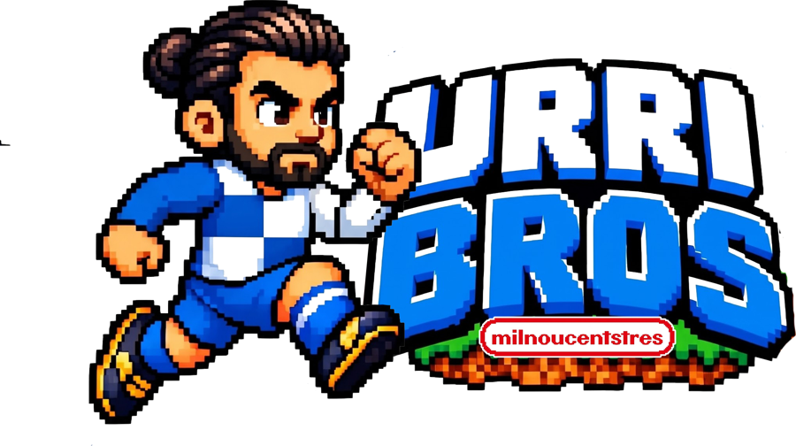
El videojoc de l'Urri
Un joc de plataformes per tot Sabadell: de Vic a la Nova Creu Alta, de la Rambla a la Mola i fins a l'ascens a Segona.
El joc
Urri Bros és un joc de plataformes gratuït protagonitzat per l'Urri amb l'equipació arlequinada. Corre, salta, xuta i recull cebes pels llocs més coneguts de la ciutat. Es juga directament al navegador sense instal·lar res i sense publicitat: a l'ordinador amb el teclat, al mòbil amb controls tàctils o amb un comandament de consola.
per Sabadell i rodalies
entre nivell i nivell
sense anuncis ni registre
teclat, tàctil i comandament
Tràiler
Els nivells
Cada nivell és un lloc de Sabadell (o del camí fins a Sabadell) amb les il·lustracions de MILNOUCENTSTRES. Al menú, el mapa de la ciutat serveix per triar on vols jugar.

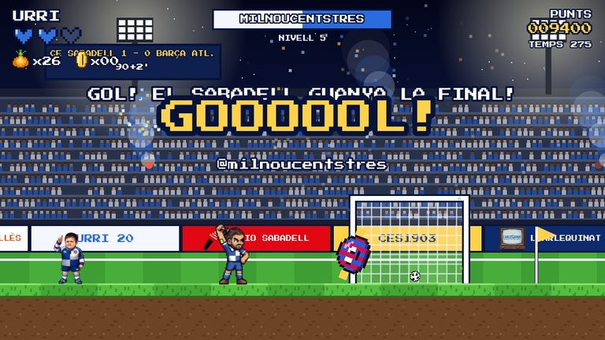

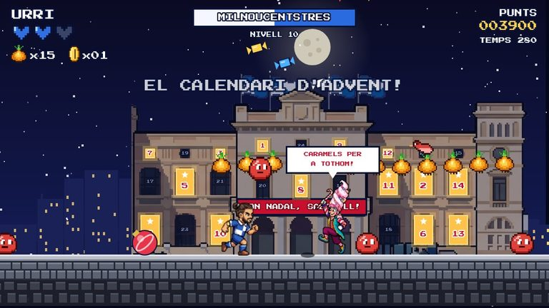

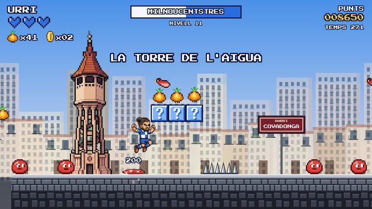

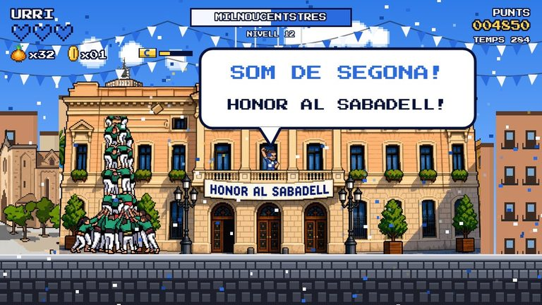

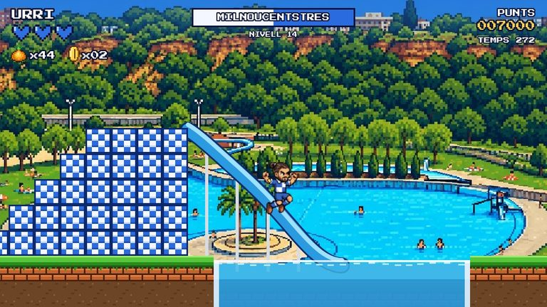

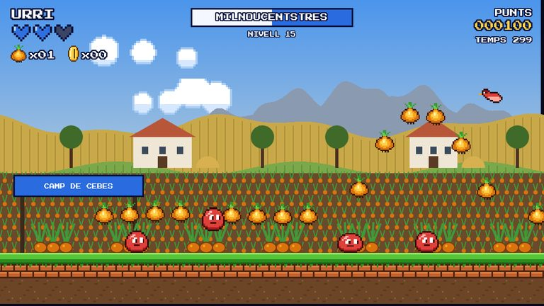

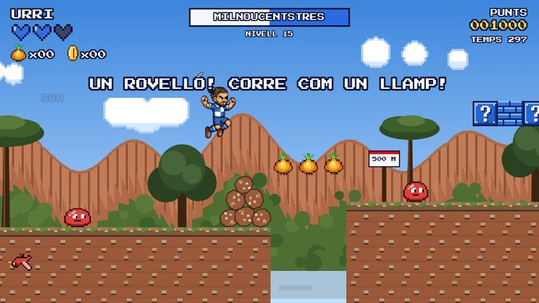

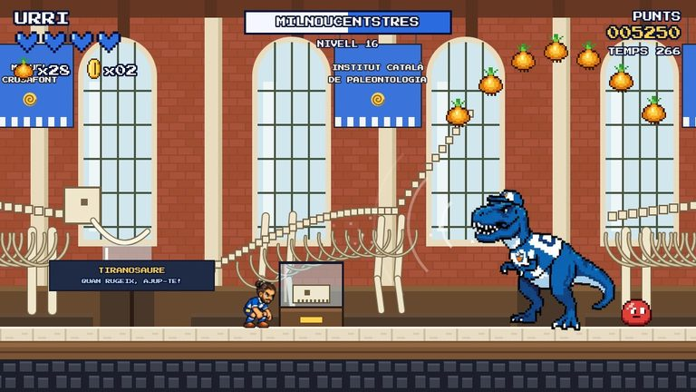

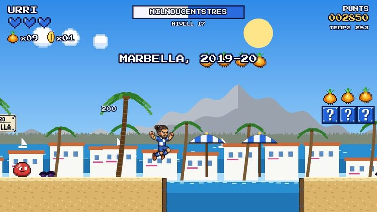
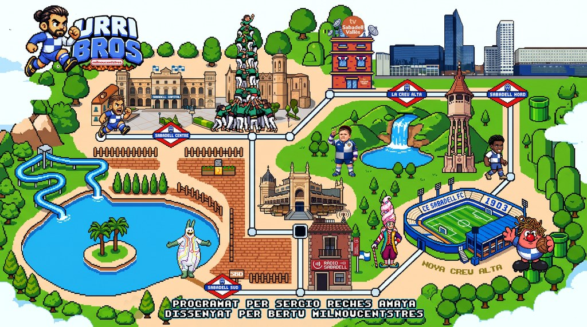
- De Vic a Sabadell, comença el viatge
- Benvingut a la capital del Vallès, Urri!
- L'arribada a la Nova Creu Alta
- La Nova Creu Alta, el pati d'Urri
- La final de la Copa Catalunya
- Sabadell de nit, cap a la Torre de l'Aigua
- Parc Catalunya, el pulmó de Sabadell
- La Rambla
- Mercat Central, l'últim encàrrec
- Nadal a Sabadell
- Els barris de Sabadell
- Celebrant l'ascens a l'Ajuntament
- La Manchester catalana
- El Ripoll: Urri coneix el Rodal
- El Parc Agrari de Sabadell
- La Mola: Urri puja al cim
- Museu de Paleontologia Miquel Crusafont
- La ruta dels ascensos
Els minijocs
Es juguen a les mitges parts entre nivells i també des del menú. Cada minijoc té el seu rànquing.
Tocs
Fes tocs amb la pilota sense que caigui. Com més a temps, més recta puja.
Penals
Cinc penals: tria la mira i la força per enganyar el porter.
La Bussi
Esquiva les Bussis que arriben corrent pel carrer. La Bussi és la mascota de la TUS.
Rematades
Deu centres per rematar de cap o de volea. Si la poses a l'escaire, el porter no hi arriba.
Futbol-tennis
Un partit a set punts contra Quadri. Al mig del camp hi ha una xarxa baixa.
Com es juga
| Teclat | |
|---|---|
| Moure's | ← → o A D |
| Saltar | Espai, ↑, W o Z |
| Córrer | Shift (mantén-la premuda) |
| Xutar | X, K o C |
| Ajupir-se | ↓ o S |
| Pausa | P o Esc |
| Mòbil i tauleta | |
|---|---|
| Moure's | Palanca (joystick) de l'esquerra |
| Saltar | Botó A |
| Córrer | Botó B |
| Xutar | Botó de la pilota |
| Pausa | Botó de dalt |
| Cal jugar amb el mòbil en horitzontal. | |
| Comandament | |
|---|---|
| Moure's | Creu o palanca esquerra |
| Saltar | A / ✕ |
| Córrer | X / □ |
| Xutar | B / ○ |
| Pausa | Start / Options |
Per pujar les puntuacions al rànquing compartit cal iniciar sessió amb Google, però es pot jugar sense compte. Més informació a la política de privacitat. El joc també es pot instal·lar com una app al mòbil o a l'ordinador i funciona sense connexió.
Crèdits
El personatge de l'Urri, el logotip, els escenaris, el mapa i el material gràfic. @milnoucentstres
El codi del joc, el disseny dels nivells, la música i els sons (sintetitzats al mateix joc).
Col·laboradors
Recursos de tercers
La lletra Press Start 2P és de CodeMan38 (Cody Boisclair) i es fa servir sota la llicència SIL Open Font License 1.1.